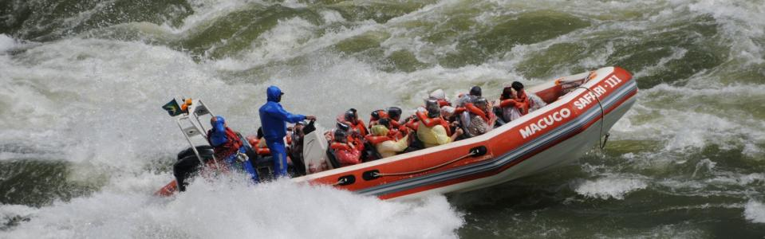

Turismo
MACUCO SAFARI

Un paseo para lavarse el alma
¿Ya se ha imaginado usted en formar parte de uno de los siete paisajes más bellos del planeta?¿También ya se ha imaginado estar bajo uno de los saltos que componen las Cataratas de Iguazú y darse un baño rápido?El paseo del Macuco Safari posibilita esta emoción inolvidable.
El Macuco Safari es una osada navegación por el Río Iguazú, que lleva a los turistas a pocos metros de las espectaculares cascadas.
La aventura comienza en tierra firme, a las orillas de la carretera que cruza el Parque Nacional de Iguazú y termina en el mirador de los saltos.Un jipe eléctrico lleva a los visitantes hasta la orilla del río por medio de una senda, en un trayecto de tres kilómetros, en medio a la floresta nativa.
En el camino, florestas centenarias, orquídeas y muchas plantas de especies encontradas solamente en el bosque Atlántico.Hasta animales silvestres aparecen para curiosear qué hacen los visitantes.Los últimos 600 metros antes de llegar al Iguazú se hacen a pie.
El embarque en los botes se hace en una plataforma ubicada en la orilla directa del Río Iguazú, cerca de 4 mil metros después de las Cataratas.Se aconseja dejar las pertenencias y documentos en el atracadero.Se distribuyen bolsas plásticas para proteger las filmadoras y máquinas fotográficas.
Los barcos, con capacidad para llevar a 25 personas, están dotados de dos motores de 150 caballos, potencia suficiente para mover un yate, pero necesaria para vencer la corriente del Río Iguazú.
El uso del chaleco salvavidas es obligatorio.En el camino hacia las Cataratas, los barqueros se esquivan de la corriente mientras los turistas aprovechan para apreciar el paisaje, lo que incluye casi siempre los arcoíris, que se forman de una margen a otra.
El trayecto recorrido por los barcos cerca de las cascadas varía según el flujo del río.Con poca agua, las correderas se ponen más peligrosas y los botes se limitan a ir hasta el Salto Tres Mosqueteros.Ya durante el período de lluvias, o cuando se abren las compuertas de las cuatro plantas hidroeléctricas ubicadas en el curso del Río Iguazú, es posible llegar al Salto Tres Marías, muy cerca de la Garganta del Diablo.
En la parada del barco, por algunos minutos, el turista puede aprovechar el paisaje y registrarlo en imágenes que seguramente les encantarán a los familiares y amigos en el regreso a casa.Desde aquel punto, se pueden ver las Cataratas del lado argentino.
El barco zarpa de nuevo y entonces llega el momento más emocionante del paseo, con el sonido ensordecedor del agua que cae de los acantilados de basalto.Con habilidad, el barquero se acerca a los saltos, provocando baños indescriptibles, capaces de refrescar el calor del verano iguazuense, que dura por lo menos ocho meses del año, y de despertar las más variadas reacciones de los pasajeros, casi todas de sorpresa y alegría.
Con las ropas empapadas, después de tres baños seguidos, llega el momento de volver, una hora y media después del comienzo de la aventura.Que jamás se la olvidará.
PARQUE DE LAS AVES
 El mundo encantado de las aves
El mundo encantado de las aves Creado en 1994 por la pareja Dennis y Anna Croukamp, el Parque de las Aves es un zoológico especializado en aves, ubicado en Foz do Iguaçu, que permite que los visitantes entren en viveros y tengan un contacto directo con más de 900 aves de 130 especies, muchas de ellas corriendo el riesgo de extinción.
En los amplios criaderos, integrados a la exuberante floresta húmeda subtropical, vuelan aves tropicales raras y coloridas, además de otros animales, tales como cocodrilos, anacondas, boas, titíes y mariposas multicolores.
Para apreciar las aves, el área de réptiles y el criadero de mariposas, los visitantes van por una senda plana y pavimentada de 1.400 metros.Ya en la entrada, son recibidos por araras y papagayos que intentan reproducirse en sus criaderos.
En cada criadero hay placas con el nombre científico y las regiones del planeta donde se encuentran las aves presentes allí.Se indican también las especies en extinción, como también las que están con cachorros.
Dentro de los criaderos, la cercanía con los pájaros es constante.Los tucanes, por ejemplo, más acostumbrados con las personas, se acercan mucho a los visitantes, proporcionando bellas fotos.
El criadero de mariposas, donde hay una gran diversidad de flores, abriga especies de mariposas y también picaflores.
El parque de las Aves, además de atender a los visitantes, desarrolla el apoyo a una serie de investigaciones con el fin de proporcionar la reproducción de especies en cautiverio y en vida libre.
Para lograr la reproducción de algunas especies, los investigadores utilizan los más diversos recursos.En el caso del criadero de los flamencos, varios espejos, dispuestos en ángulos, dan la sensación de que la población de esta ave es mucho más grande.La razón es que los flamencos solo se reproducen en grandes bandadas, pero, como el número de individuos es reducido, el papel de los espejos de confundir la naturaleza.
El parque es exitoso en la reproducción de muchas especies, entre ellas el periquito amarillo, ave en la lista de las amenazadas de extinción, como también la amazona brasileña, además del tucán, del chajá, de la grulla coronada, del cóndor real y de la magnífica arara azul.